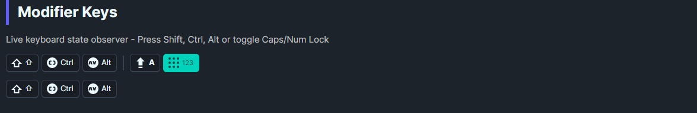

A visual indicator that displays the current state of keyboard modifier keys (Shift, Ctrl, Alt) and lock keys (Caps Lock, Num Lock, Scroll Lock). Automatically syncs with the OS keyboard state.
DaisyModifierKeys is useful for applications where users need to see which modifier keys are currently pressed, such as:
The control automatically hooks into keyboard events and updates in real-time. On Windows, it uses native APIs to read the actual lock key states from the OS.
| Property | Type | Default | Description |
|---|---|---|---|
IsShiftPressed |
bool |
false |
Whether Shift is currently held |
IsCtrlPressed |
bool |
false |
Whether Ctrl is currently held |
IsAltPressed |
bool |
false |
Whether Alt is currently held |
IsCapsLockOn |
bool |
false |
Whether Caps Lock is active |
IsNumLockOn |
bool |
false |
Whether Num Lock is active |
IsScrollLockOn |
bool |
false |
Whether Scroll Lock is active |
| Property | Type | Default | Description |
|---|---|---|---|
ShowShift |
bool |
true |
Show the Shift indicator |
ShowCtrl |
bool |
true |
Show the Ctrl indicator |
ShowAlt |
bool |
true |
Show the Alt indicator |
ShowCapsLock |
bool |
true |
Show the Caps Lock indicator |
ShowNumLock |
bool |
true |
Show the Num Lock indicator |
ShowScrollLock |
bool |
false |
Show the Scroll Lock indicator |
<!-- Show all modifier keys (default) -->
<controls:DaisyModifierKeys />
<!-- Show only modifier keys, hide lock keys -->
<controls:DaisyModifierKeys
ShowCapsLock="False"
ShowNumLock="False" />
<!-- Show only Ctrl and Shift -->
<controls:DaisyModifierKeys
ShowAlt="False"
ShowCapsLock="False"
ShowNumLock="False" />
<!-- Show all including Scroll Lock -->
<controls:DaisyModifierKeys ShowScrollLock="True" />| Platform | Modifier Keys | Lock Keys |
|---|---|---|
| Windows | ✅ Native API | ✅ Native API |
| macOS | ✅ Key events | ⚠️ Toggle fallback |
| Linux | ✅ Key events | ⚠️ Toggle fallback |
On platforms without native lock key support, the control uses a toggle-based fallback that tracks key presses but may not reflect the actual OS state on startup.
The control displays each key as a DaisyKbd element. Active keys are highlighted:
Customize appearance using standard DaisyKbd theming.